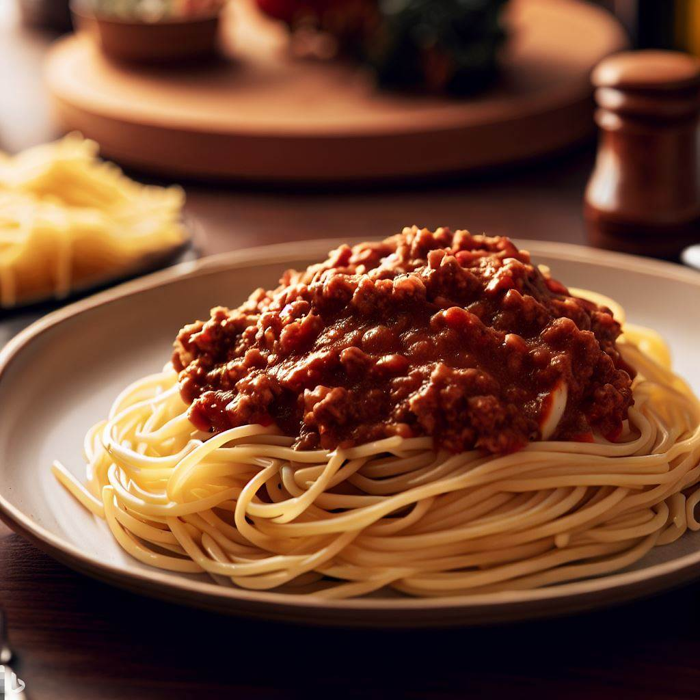

Mom's Spaghetti

Nothing fills you up faster than a plate of mom's spaghetti and meat sauce with a slice or two of garlic bread on the side.
Ingredients
- 2lbs Ground Beef
- 2 Big Cans of Tomato Sauce
- 2 Cans of Sliced Mushrooms
- 2 Cans of Chopped Olives
- 2 Large Green Bell Peppers
- 1 Large Onion
- Italian Seasoning
- Choice of Pasta
- Garlic Bread
Directions
- Cut onion and green bell peppers.
- Add onion, green peppers, mushrooms, olives, and Italian seasoning with the ground beef on a stove-top pot.
- Brown meat and begin to break it down into bite-size pieces.
- Once meat is cooked fully, add tomato sauce to pot and heat.
- Make pasta of choice and prepare garlic bread as needed.
- Serve & enjoy!!
Mom's Tacos
My Fajitas
Poor Man's Casserole